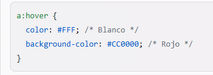

Estas reglas definen el color de los enlaces en su estado normal (a), cuando el usuario pasa el cursor sobre ellos (a:hover) y cuando ya han sido visitados (a:visited). Puedes cambiar los valores de los colores según tu preferencia.
Ejemplo:
Para mostrar los enlaces con el estilo que deseas cuando el usuario pasa su ratón sobre ellos, puedes modificar la regla CSS de a:hover de la siguiente manera:
Ejemplo:
Esto hará que el color de la letra sea blanco y el color de fondo sea rojo cuando el cursor esté sobre el enlace.
Para mostrar los enlaces visitados en color gris claro, puedes modificar la regla CSS de a:visited de la siguiente manera:
Esto hará que el color de la letra sea gris claro cuando el enlace haya sido visitado.